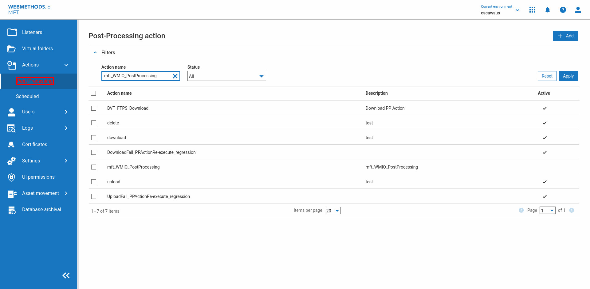

| Timestamp | Description | Status | Image |
| Thu Jul 11 22:32:36 IST 2024 | RefreshBrowser | |  |
| Thu Jul 11 22:32:36 IST 2024 | ********** ifSatisfy ********** | |  |
| Thu Jul 11 22:32:41 IST 2024 | Verify Post-Processing#ExactMatch link above Scheduled#ExactMatch link isNotVisible [timeout=3] ERROR MSG: Element ((//a//*[not(self::script) and not(self::option) and not(self::select)][translate(normalize-space(translate(text()," "," ")),"ABCDEFGHIJKLMNOPQRSTUVWXYZ","abcdefghijklmnopqrstuvwxyz")="scheduled"])[1]/preceding::a//*[not(self::script) and not(self::option) and not(self::select)][translate(normalize-space(translate(text()," "," ")),"ABCDEFGHIJKLMNOPQRSTUVWXYZ","abcdefghijklmnopqrstuvwxyz")="post-processing"])[1] is still visible even after waiting for 3000 milliseconds | | |
| Thu Jul 11 22:32:41 IST 2024 | ********** else ********** | |  |
| Thu Jul 11 22:32:41 IST 2024 | *** END ifsatisfy "Verify "Post-Processing#ExactMatch" link above "Scheduled#ExactMatch" link isNotVisible [timeout=3]" execute "Click "Actions#ExactMatch" label preceding "Expand" label" | |  |
| Thu Jul 11 22:32:44 IST 2024 | sleep 3 | |  |
| Thu Jul 11 22:32:45 IST 2024 | Click Post-Processing link | | |
| Thu Jul 11 22:32:48 IST 2024 | sleep 3 | |  |
| Thu Jul 11 22:32:48 IST 2024 | waitforpagetoload | |  |
| Thu Jul 11 22:32:48 IST 2024 | ********** ifSatisfy ********** | |  |
| Thu Jul 11 22:32:58 IST 2024 | Verify Apply button following Reset Button isNotVisible [timeout=3] | | |
| Thu Jul 11 22:32:59 IST 2024 | ********** then ********** | |  |
| Thu Jul 11 22:32:59 IST 2024 | Click Filters Button Some elements have been filterd because the element is not on top even though it is visible on the UI, Consider adding an optional attribute [ignoreOnTopCheck] | |  |
| Thu Jul 11 22:33:00 IST 2024 | Click Filters Button Some elements have been filterd because the element is not on top even though it is visible on the UI, Consider adding an optional attribute [ignoreOnTopCheck] | |  |
| Thu Jul 11 22:33:00 IST 2024 | ifsatisfy "Verify "Apply" button following "Reset" Button isNotVisible [timeout=3]" execute "Click "Filters" Button" Some elements have been filterd because the element is not on top even though it is visible on the UI, Consider adding an optional attribute [ignoreOnTopCheck] | |  |
| Thu Jul 11 22:33:00 IST 2024 | ************ COMMAND EXECUTION FAILED. TRYING AGAIN TO SEE IF THE COMMAND PASSES ON SECOND ATTEMPT | | |
| Thu Jul 11 22:33:00 IST 2024 | ********** ifSatisfy ********** | | |
| Thu Jul 11 22:33:10 IST 2024 | Verify Apply button following Reset Button isNotVisible [timeout=3] | | |
| Thu Jul 11 22:33:11 IST 2024 | ********** then ********** | |  |
| Thu Jul 11 22:33:11 IST 2024 | Click Filters Button Some elements have been filterd because the element is not on top even though it is visible on the UI, Consider adding an optional attribute [ignoreOnTopCheck] | | |
| Thu Jul 11 22:33:11 IST 2024 | Click Filters Button Some elements have been filterd because the element is not on top even though it is visible on the UI, Consider adding an optional attribute [ignoreOnTopCheck] | |  |
| Thu Jul 11 22:33:12 IST 2024 | ifsatisfy "Verify "Apply" button following "Reset" Button isNotVisible [timeout=3]" execute "Click "Filters" Button" Some elements have been filterd because the element is not on top even though it is visible on the UI, Consider adding an optional attribute [ignoreOnTopCheck] | |  |
| Thu Jul 11 22:33:12 IST 2024 | ************ RE-TRY ALSO FAILED/NOT-TRIED. RECOVER BY RE-TRYING PREVIOUS CNL. TOTAL PREVIOUS CNL : 10 | |  |
| Thu Jul 11 22:33:12 IST 2024 | ************ RECOVERY ATTEMPT 1 of 10 with 2 previous commands | |  |
| Thu Jul 11 22:33:15 IST 2024 | sleep 3 | |  |
| Thu Jul 11 22:33:15 IST 2024 | waitforpagetoload | |  |
| Thu Jul 11 22:33:15 IST 2024 | ********** ifSatisfy ********** | |  |
| Thu Jul 11 22:33:25 IST 2024 | Verify Apply button following Reset Button isNotVisible [timeout=3] | |  |
| Thu Jul 11 22:33:25 IST 2024 | ********** then ********** | |  |
| Thu Jul 11 22:33:26 IST 2024 | Click Filters Button Some elements have been filterd because the element is not on top even though it is visible on the UI, Consider adding an optional attribute [ignoreOnTopCheck] | |  |
| Thu Jul 11 22:33:26 IST 2024 | Click Filters Button Some elements have been filterd because the element is not on top even though it is visible on the UI, Consider adding an optional attribute [ignoreOnTopCheck] | |  |
| Thu Jul 11 22:33:27 IST 2024 | ifsatisfy "Verify "Apply" button following "Reset" Button isNotVisible [timeout=3]" execute "Click "Filters" Button" Some elements have been filterd because the element is not on top even though it is visible on the UI, Consider adding an optional attribute [ignoreOnTopCheck] | |  |
| Thu Jul 11 22:33:27 IST 2024 | ************ RECOVERY ATTEMPT 2 of 10 with 4 previous commands | |  |
| Thu Jul 11 22:33:28 IST 2024 | Click Post-Processing link | |  |
| Thu Jul 11 22:33:28 IST 2024 | waitforpagetoload | |  |
| Thu Jul 11 22:33:31 IST 2024 | sleep 3 | |  |
| Thu Jul 11 22:33:31 IST 2024 | waitforpagetoload | |  |
| Thu Jul 11 22:33:31 IST 2024 | ********** ifSatisfy ********** | |  |
| Thu Jul 11 22:33:41 IST 2024 | Verify Apply button following Reset Button isNotVisible [timeout=3] | |  |
| Thu Jul 11 22:33:41 IST 2024 | ********** then ********** | |  |
| Thu Jul 11 22:33:42 IST 2024 | Click Filters Button Some elements have been filterd because the element is not on top even though it is visible on the UI, Consider adding an optional attribute [ignoreOnTopCheck] | |  |
| Thu Jul 11 22:33:42 IST 2024 | Click Filters Button Some elements have been filterd because the element is not on top even though it is visible on the UI, Consider adding an optional attribute [ignoreOnTopCheck] | |  |
| Thu Jul 11 22:33:42 IST 2024 | ifsatisfy "Verify "Apply" button following "Reset" Button isNotVisible [timeout=3]" execute "Click "Filters" Button" Some elements have been filterd because the element is not on top even though it is visible on the UI, Consider adding an optional attribute [ignoreOnTopCheck] | |  |
| Thu Jul 11 22:33:42 IST 2024 | ************ RECOVERY ATTEMPT 3 of 10 with 6 previous commands | |  |
| Thu Jul 11 22:33:45 IST 2024 | sleep 3 | |  |
| Thu Jul 11 22:33:45 IST 2024 | waitforpagetoload | |  |
| Thu Jul 11 22:33:46 IST 2024 | Click Post-Processing link | |  |
| Thu Jul 11 22:33:46 IST 2024 | waitforpagetoload | |  |
| Thu Jul 11 22:33:49 IST 2024 | sleep 3 | |  |
| Thu Jul 11 22:33:49 IST 2024 | waitforpagetoload | |  |
| Thu Jul 11 22:33:50 IST 2024 | ********** ifSatisfy ********** | |  |
| Thu Jul 11 22:34:00 IST 2024 | Verify Apply button following Reset Button isNotVisible [timeout=3] | |  |
| Thu Jul 11 22:34:00 IST 2024 | ********** then ********** | |  |
| Thu Jul 11 22:34:00 IST 2024 | Click Filters Button Some elements have been filterd because the element is not on top even though it is visible on the UI, Consider adding an optional attribute [ignoreOnTopCheck] | |  |
| Thu Jul 11 22:34:01 IST 2024 | Click Filters Button Some elements have been filterd because the element is not on top even though it is visible on the UI, Consider adding an optional attribute [ignoreOnTopCheck] | |  |
| Thu Jul 11 22:34:01 IST 2024 | ifsatisfy "Verify "Apply" button following "Reset" Button isNotVisible [timeout=3]" execute "Click "Filters" Button" Some elements have been filterd because the element is not on top even though it is visible on the UI, Consider adding an optional attribute [ignoreOnTopCheck] | |  |
| Thu Jul 11 22:34:01 IST 2024 | ************ RECOVERY ATTEMPT 4 of 10 with 8 previous commands | |  |
| Thu Jul 11 22:34:01 IST 2024 | ********** ifSatisfy ********** | |  |
| Thu Jul 11 22:34:06 IST 2024 | Verify Post-Processing#ExactMatch link above Scheduled#ExactMatch link isNotVisible [timeout=3] ERROR MSG: Element ((//a//*[not(self::script) and not(self::option) and not(self::select)][translate(normalize-space(translate(text()," "," ")),"ABCDEFGHIJKLMNOPQRSTUVWXYZ","abcdefghijklmnopqrstuvwxyz")="scheduled"])[1]/preceding::a//*[not(self::script) and not(self::option) and not(self::select)][translate(normalize-space(translate(text()," "," ")),"ABCDEFGHIJKLMNOPQRSTUVWXYZ","abcdefghijklmnopqrstuvwxyz")="post-processing"])[1] is still visible even after waiting for 3000 milliseconds | |  |
| Thu Jul 11 22:34:06 IST 2024 | ********** else ********** | |  |
| Thu Jul 11 22:34:06 IST 2024 | *** END ifsatisfy "Verify "Post-Processing#ExactMatch" link above "Scheduled#ExactMatch" link isNotVisible [timeout=3]" execute "Click "Actions#ExactMatch" label preceding "Expand" label" | |  |
| Thu Jul 11 22:34:06 IST 2024 | waitforpagetoload [doNotHandleAlert] | |  |
| Thu Jul 11 22:34:09 IST 2024 | sleep 3 | |  |
| Thu Jul 11 22:34:09 IST 2024 | waitforpagetoload | |  |
| Thu Jul 11 22:34:10 IST 2024 | Click Post-Processing link | |  |
| Thu Jul 11 22:34:10 IST 2024 | waitforpagetoload | |  |
| Thu Jul 11 22:34:13 IST 2024 | sleep 3 | |  |
| Thu Jul 11 22:34:13 IST 2024 | waitforpagetoload | |  |
| Thu Jul 11 22:34:14 IST 2024 | ********** ifSatisfy ********** | |  |
| Thu Jul 11 22:34:24 IST 2024 | Verify Apply button following Reset Button isNotVisible [timeout=3] | |  |
| Thu Jul 11 22:34:24 IST 2024 | ********** then ********** | |  |
| Thu Jul 11 22:34:24 IST 2024 | Click Filters Button Some elements have been filterd because the element is not on top even though it is visible on the UI, Consider adding an optional attribute [ignoreOnTopCheck] | |  |
| Thu Jul 11 22:34:25 IST 2024 | Click Filters Button Some elements have been filterd because the element is not on top even though it is visible on the UI, Consider adding an optional attribute [ignoreOnTopCheck] | |  |
| Thu Jul 11 22:34:25 IST 2024 | ifsatisfy "Verify "Apply" button following "Reset" Button isNotVisible [timeout=3]" execute "Click "Filters" Button" Some elements have been filterd because the element is not on top even though it is visible on the UI, Consider adding an optional attribute [ignoreOnTopCheck] | |  |
| Thu Jul 11 22:34:25 IST 2024 | ************ RECOVERY ATTEMPT 5 of 10 with 10 previous commands | |  |
| Thu Jul 11 22:34:29 IST 2024 | RefreshBrowser | |  |
| Thu Jul 11 22:34:29 IST 2024 | waitforpagetoload | |  |
| Thu Jul 11 22:34:30 IST 2024 | ********** ifSatisfy ********** | |  |
| Thu Jul 11 22:34:34 IST 2024 | Verify Post-Processing#ExactMatch link above Scheduled#ExactMatch link isNotVisible [timeout=3] ERROR MSG: Element ((//a//*[not(self::script) and not(self::option) and not(self::select)][translate(normalize-space(translate(text()," "," ")),"ABCDEFGHIJKLMNOPQRSTUVWXYZ","abcdefghijklmnopqrstuvwxyz")="scheduled"])[1]/preceding::a//*[not(self::script) and not(self::option) and not(self::select)][translate(normalize-space(translate(text()," "," ")),"ABCDEFGHIJKLMNOPQRSTUVWXYZ","abcdefghijklmnopqrstuvwxyz")="post-processing"])[1] is still visible even after waiting for 3000 milliseconds | |  |
| Thu Jul 11 22:34:34 IST 2024 | ********** else ********** | |  |
| Thu Jul 11 22:34:34 IST 2024 | *** END ifsatisfy "Verify "Post-Processing#ExactMatch" link above "Scheduled#ExactMatch" link isNotVisible [timeout=3]" execute "Click "Actions#ExactMatch" label preceding "Expand" label" | |  |
| Thu Jul 11 22:34:35 IST 2024 | waitforpagetoload [doNotHandleAlert] | |  |
| Thu Jul 11 22:34:38 IST 2024 | sleep 3 | |  |
| Thu Jul 11 22:34:38 IST 2024 | waitforpagetoload | |  |
| Thu Jul 11 22:34:39 IST 2024 | Click Post-Processing link | |  |
| Thu Jul 11 22:34:39 IST 2024 | waitforpagetoload | |  |
| Thu Jul 11 22:34:42 IST 2024 | sleep 3 | |  |
| Thu Jul 11 22:34:42 IST 2024 | waitforpagetoload | |  |
| Thu Jul 11 22:34:42 IST 2024 | ********** ifSatisfy ********** | |  |
| Thu Jul 11 22:34:52 IST 2024 | Verify Apply button following Reset Button isNotVisible [timeout=3] | |  |
| Thu Jul 11 22:34:53 IST 2024 | ********** then ********** | |  |
| Thu Jul 11 22:34:53 IST 2024 | Click Filters Button | |  |
| Thu Jul 11 22:34:54 IST 2024 | *** END ifsatisfy "Verify "Apply" button following "Reset" Button isNotVisible [timeout=3]" execute "Click "Filters" Button" | |  |
| Thu Jul 11 22:34:54 IST 2024 | Type mft_WMIO_PostProcessing in "Action name" TextField | |  |
| Thu Jul 11 22:34:55 IST 2024 | Click Apply Button | |  |
| Thu Jul 11 22:35:26 IST 2024 | Check Checkbox preceding mft_WMIO_PostProcessing label | |  |
| Thu Jul 11 22:35:27 IST 2024 | Click Delete Button preceding Cancel Button | |  |
| Thu Jul 11 22:35:28 IST 2024 | Click Ok Button following Cancel Button | |  |
| Thu Jul 11 22:35:29 IST 2024 | Verify "Delete successful." label isVisible | |  |